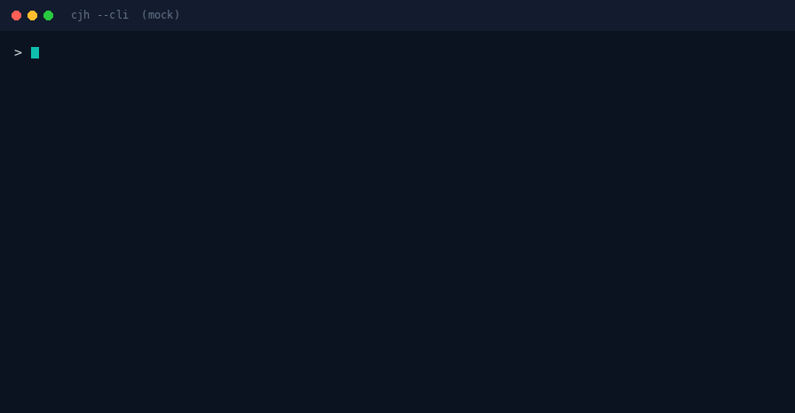
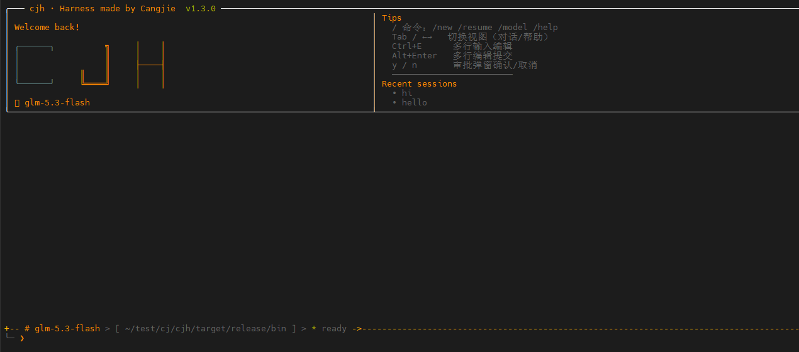

▣
One file = one agent
Statically compiled with Cangjie cjnative: 17.1 MB on Linux, 14.2 MB Windows exe, no Node or Python runtime. Download, chmod, run.
Cangjie · Coding Agent Harness
Say what you want once — the agent plans, calls tools, reads results and iterates until the job is done, all visible live in the TUI, or driven remotely from the built-in web UI. One static binary, zero dependencies — one file is the whole agent.
# No API key needed: mock mode runs the whole loop
$ curl -LO https://api.atomgit.com/api/v5/repos/qq8864/cjh/releases/v1.6.1/attach_files/cjh-v1.6.1-linux-x64
$ chmod +x cjh-v1.6.1-linux-x64
$ CJH_MOCK=1 ./cjh-v1.6.1-linux-x64
# Point it at a real model (any provider key)
$ export DEEPSEEK_API_KEY=sk-xxx
$ ./cjh-v1.6.1-linux-x64No feature bloat. Two hard targets — spend fewer tokens, run faster — packed into a binary you never install.
Statically compiled with Cangjie cjnative: 17.1 MB on Linux, 14.2 MB Windows exe, no Node or Python runtime. Download, chmod, run.
Oversized tool results keep head and tail; the middle is spilled verbatim to ~/.cjh/spill/ with the path in the elision marker, so the model can read_file it back. Cheaper without losing information.
Each tool call yields (path, isWrite) resources, which build a dependency graph; topological groups run spawn-concurrently inside a group and serially across groups, with parallelSavedMs reporting the time actually saved.
Hand-written termios + ANSI diff refresh over raw libc FFI, no third-party terms: Markdown, / command completion, 10 themes, side-by-side Tasks/Agents panels, queued approvals for risky actions.
A built-in HTTP server with WebSocket streaming, a REST API and a bundled SPA drives the same agent remotely. Token auth and a startup security audit are on by default.
Skills are just Markdown and plugins may ship tools; SHA256 checksums plus SM2 signatures (native stdx.crypto) cover the supply chain from the language layer up.
The task tool spawns explore/worker subagents concurrently, watched live in the bottom-right Agents panel — bounded by concurrency/token/time budgets, with staggered starts and throttle backoff so 5-way fan-out survives real-provider rate limits.
One command turns cjh into a REST + WebSocket service with crash isolation — verified integrations include the ai-chat notebook app. Frame order and field-tested pitfalls in the repo's integration guide.
A full-screen TUI in the terminal, and a live stream in the browser.



Run it before paying anything: mock mode needs no network and no API key, and still walks the full loop.
curl -LO https://api.atomgit.com/api/v5/repos/qq8864/cjh/releases/v1.6.1/attach_files/cjh-v1.6.1-linux-x64
chmod +x cjh-v1.6.1-linux-x64
CJH_MOCK=1 ./cjh-v1.6.1-linux-x64export DEEPSEEK_API_KEY=sk-xxx # or OPENAI_API_KEY / DASHSCOPE_API_KEY / CJH_API_KEY
./cjh-v1.6.1-linux-x64 # TUI by default; --cli plain text; --mode json headless
./cjh-v1.6.1-linux-x64 web --port 8765 --token my-secret # web UI# Unzip cjh-v1.6.1-windows-x64-selfcontained.zip first
# the exe and its 4 DLLs must stay in the same directory
cjh-v1.6.1-windows-x64.exeBuilding from source? See the README: Cangjie SDK 1.0.5+, cjpm build produces the static binary and ./scripts/test.sh runs the full suite.
Prebuilt for Linux and Windows, ready to run. All releases →
chmod +x and run. Needs glibc ≥ 2.34.Need the tarball or full checksums? See dist/SHA256SUMS in the repository.
Not just "an agent written in Cangjie": the potholes became documentation and the confirmed defects went back to the language team — each with a minimal reproduction, not a hunch.
1000+ lines covering FFI, conditional compilation, static linking, concurrency and locks, TLS, terminal encoding and artifact verification — each with symptoms, hard evidence and a reusable recipe. Read the notes →
cjterm / cjlog / cjconfig / cjcfg / cjutil / cjllm: zero dependencies or official stdx only, each with its own README, examples and MIT licence — ready to contribute separately.
Filed to Cangjie/UsersForum as #3473–#3484 (defects and proposals); all triaged and answered by the language team. See the issue →
Builds fine, then the test binary exits with SIGSEGV / double free; the same project switches to dynamic linking and goes 441/441 green, pinning it to static linking plus the test macros. #3473 →
The same --static* flags: Linux yields a dependency-free single file, Windows neither errors nor takes effect (output size and PE imports match the dynamic build), and the SDK ships no static runtime. #3484 →
Re-checking community feedback corrected three of our earlier claims: connect(timeout:) does work, the default spawn stack is complete, and Directory.removeIfExists is a top-level function. Measurement beats memory.
Source and docs live in the same repository, and the key designs record their "why".
17 MB download, no runtime to install. Questions and ideas — open an issue.